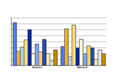

home
»
ui
»
VisualDesign
Visual Design
|
UI
| Chart
New default colors for Chart
Current situation ::
Chart default colors of OpenOffice.org 2.2
|
Examples of default Chart colors
Proposals for new colors ::
#01
|
#02
|
#03
|
#04
|
#05
|
#06
|
#07
|
#08
|
#09
|
#10
|
#11
|
#12
Examples of new colors ::
#01
|
#02
|
#03
|
#04
|
#05
|
#06
|
#07
|
#08
|
#09
|
#10
|
#11
|
#12
UI proposal :: ideas for color dialog in Chart
New Chart colors ::
the voting
|
the results
| the final color table
Default Chart Colors – The Current Situation
The default colors of the current version (OpenOffice.org 2.2)
See examples of
the current colors...
New Default Colors for Chart – Proposal #01
See examples of
#01...
New Default Colors for Chart – Proposal #02
See examples of
#02...
New Default Colors for Chart – Proposal #03
See examples of
#03...
NNew Default Colors for Chart – Proposal #04
See examples of
#04...
New Default Colors for Chart – Proposal #05
See examples of
#05...
New Default Colors for Chart – Proposal #06
See examples of
#06...
New Default Colors for Chart – Proposal #07
See examples of
#07...
New Default Colors for Chart– Proposal #08
See examples of
#08...
New Default Colors for Chart – Proposal #09
See examples of
#09...
New Default Colors for Chart – Proposal #10
See examples of
#10...
New Default Colors for Chart – Proposal #11
See examples of
#11...
New Default Colors for Chart – Proposal #12
See examples of
#12...

Thank you for your vote! Now, the voting is over – please, have a
look at the results
.
Last change: 03/06/2007 by
sts